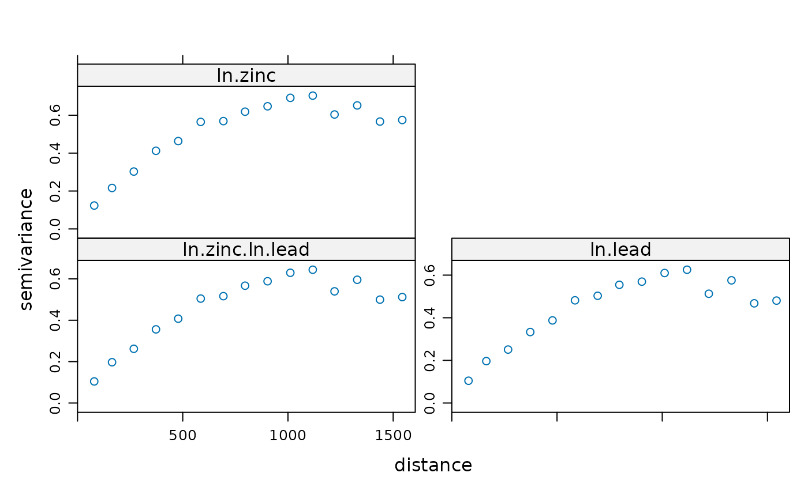
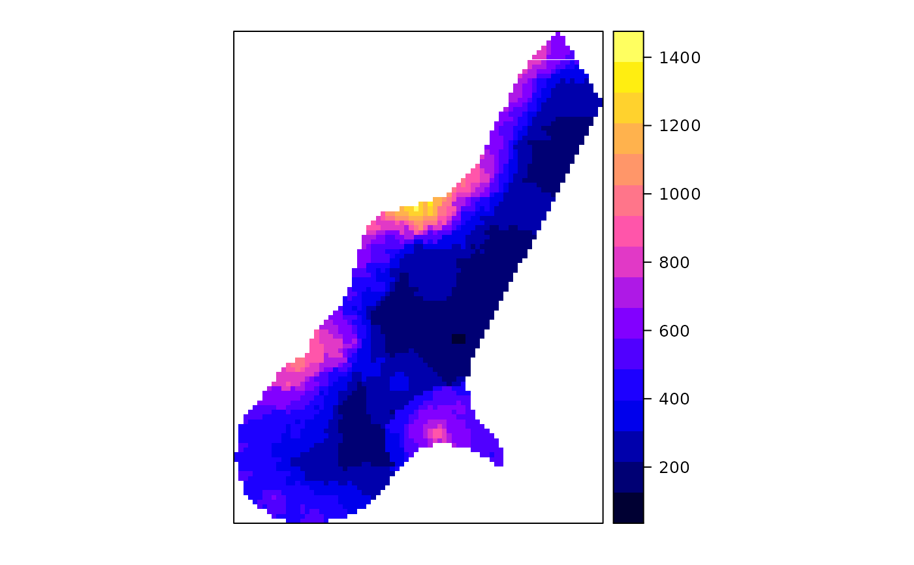
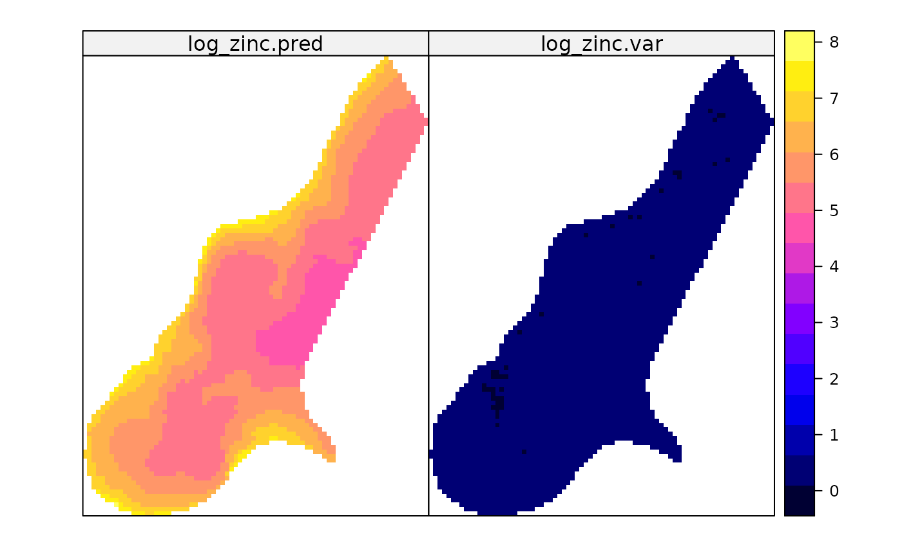

Create gstat objects, or subset it
gstat.RdFunction that creates gstat objects; objects that hold all the information necessary for univariate or multivariate geostatistical prediction (simple, ordinary or universal (co)kriging), or its conditional or unconditional Gaussian or indicator simulation equivalents. Multivariate gstat object can be subsetted.
gstat(g, id, formula, locations, data, model = NULL, beta, nmax = Inf, nmin = 0, omax = 0, maxdist = Inf, force = FALSE, dummy = FALSE, set, fill.all = FALSE, fill.cross = TRUE, variance = "identity", weights = NULL, merge, degree = 0, vdist = FALSE, lambda = 1.0) # S3 method for gstat print(x, ...)
Arguments
| g | gstat object to append to; if missing, a new gstat object is created |
|---|---|
| id | identifier of new variable; if missing, |
| formula | formula that defines the dependent variable as a linear
model of independent variables; suppose the dependent variable has name
|
| locations | formula with only independent variables that define the
spatial data locations (coordinates), e.g. |
| data | data frame; contains the dependent variable, independent variables, and locations. |
| model | variogram model for this |
| beta | for simple kriging (and simulation based on simple kriging): vector with the trend coefficients (including intercept); if no independent variables are defined the model only contains an intercept and this should be the expected value; for cross variogram computations: mean parameters to be used instead of the OLS estimates |
| nmax | for local kriging: the number of nearest observations that should be used for a kriging prediction or simulation, where nearest is defined in terms of the space of the spatial locations |
| nmin | for local kriging: if the number of nearest observations
within distance |
| omax | maximum number of observations to select per octant (3D) or
quadrant (2D); only relevant if |
| maxdist | for local kriging: only observations within a distance
of |
| force | for local kriging, force neighbourhood selection: in case
|
| dummy | logical; if TRUE, consider this data as a dummy variable (only necessary for unconditional simulation) |
| set | named list with optional parameters to be passed to
gstat (only |
| x | gstat object to print |
| fill.all | logical; if TRUE, fill all of the direct variogram and,
depending on the value of |
| fill.cross | logical; if TRUE, fill all of the cross variograms, if
FALSE fill only all direct variogram model slots in |
| variance | character; variance function to transform to non-stationary covariances; "identity" does not transform, other options are "mu" (Poisson) and "mu(1-mu)" (binomial) |
| weights | numeric vector; if present, covariates are present, and variograms are missing weights are passed to OLS prediction routines resulting in WLS; if variograms are given, weights should be 1/variance, where variance specifies location-specific measurement error; see references section below |
| merge | either character vector of length 2, indicating two ids
that share a common mean; the more general gstat merging of any two
coefficients across variables is obtained when a list is passed, with
each element a character vector of length 4, in the form
|
| degree | order of trend surface in the location, between 0 and 3 |
| vdist | logical; if TRUE, instead of Euclidian distance variogram distance is used for selecting the nmax nearest neighbours, after observations within distance maxdist (Euclidian/geographic) have been pre-selected |
| lambda | test feature; doesn't do anything (yet) |
| ... | arguments that are passed to the printing of variogram models only |
Details
to print the full contents of the object g returned,
use as.list(g) or print.default(g)
Value
an object of class gstat, which inherits from list.
Its components are:
list; each element is a list with the formula,
locations, data, nvars, beta, etc., for a
variable
list; each element contains a variogram model; names are
those of the elements of data; cross variograms have names of
the pairs of data elements, separated by a . (e.g.:
var1.var2
list; named list, corresponding to set name=value;
gstat commands (look up the set command in the gstat manual for a full list)
References
http://www.gstat.org/ Pebesma, E.J., 2004. Multivariable geostatistics in S: the gstat package. Computers \& Geosciences, 30: 683-691.
for kriging with known, varying measurement errors (weights), see e.g.
Delhomme, J.P. Kriging in the hydrosciences. Advances in Water
Resources, 1(5):251-266, 1978; see also the section Kriging with known
measurement errors in the gstat user's manual, http://www.gstat.org/
Author
Edzer Pebesma
Note
The function currently copies the data objects into the gstat object, so this may become a large object. I would like to copy only the name of the data frame, but could not get this to work. Any help is appreciated.
Subsetting (see examples) is done using the id's of the variables,
or using numeric subsets. Subsetted gstat objects only contain cross
variograms if (i) the original gstat object contained them and (ii) the
order of the subset indexes increases, numerically, or given the order
they have in the gstat object.
The merge item may seem obscure. Still, for colocated cokriging, it is
needed. See texts by Goovaerts, Wackernagel, Chiles and Delfiner, or
look for standardised ordinary kriging in the 1992 Deutsch and Journel
or Isaaks and Srivastava. In these cases, two variables share a common
mean parameter. Gstat generalises this case: any two variables may share
any of the regression coefficients; allowing for instance analysis of
covariance models, when variograms were left out (see e.g. R. Christensen's
``Plane answers'' book on linear models). The tests directory of the
package contains examples in file merge.R. There is also demo(pcb)
which merges slopes across years, but with year-dependent intercept.
See also
Examples
library(sp) data(meuse) coordinates(meuse) = ~x+y # let's do some manual fitting of two direct variograms and a cross variogram g <- gstat(id = "ln.zinc", formula = log(zinc)~1, data = meuse) g <- gstat(g, id = "ln.lead", formula = log(lead)~1, data = meuse) # examine variograms and cross variogram: plot(variogram(g))# enter direct variograms: g <- gstat(g, id = "ln.zinc", model = vgm(.55, "Sph", 900, .05)) g <- gstat(g, id = "ln.lead", model = vgm(.55, "Sph", 900, .05)) # enter cross variogram: g <- gstat(g, id = c("ln.zinc", "ln.lead"), model = vgm(.47, "Sph", 900, .03)) # examine fit: plot(variogram(g), model = g$model, main = "models fitted by eye")# see also demo(cokriging) for a more efficient approach g["ln.zinc"]#> data: #> ln.zinc : formula = log(zinc)`~`1 ; data dim = 155 x 12 #> variograms: #> model psill range #> ln.zinc[1] Nug 0.05 0 #> ln.zinc[2] Sph 0.55 900g["ln.lead"]#> data: #> ln.lead : formula = log(lead)`~`1 ; data dim = 155 x 12 #> variograms: #> model psill range #> ln.lead[1] Nug 0.05 0 #> ln.lead[2] Sph 0.55 900#> data: #> ln.zinc : formula = log(zinc)`~`1 ; data dim = 155 x 12 #> ln.lead : formula = log(lead)`~`1 ; data dim = 155 x 12 #> variograms: #> model psill range #> ln.zinc[1] Nug 0.05 0 #> ln.zinc[2] Sph 0.55 900 #> ln.lead[1] Nug 0.05 0 #> ln.lead[2] Sph 0.55 900 #> ln.zinc.ln.lead[1] Nug 0.03 0 #> ln.zinc.ln.lead[2] Sph 0.47 900g[1]#> data: #> ln.zinc : formula = log(zinc)`~`1 ; data dim = 155 x 12 #> variograms: #> model psill range #> ln.zinc[1] Nug 0.05 0 #> ln.zinc[2] Sph 0.55 900g[2]#> data: #> ln.lead : formula = log(lead)`~`1 ; data dim = 155 x 12 #> variograms: #> model psill range #> ln.lead[1] Nug 0.05 0 #> ln.lead[2] Sph 0.55 900# Inverse distance interpolation with inverse distance power set to .5: # (kriging variants need a variogram model to be specified) data(meuse.grid) gridded(meuse.grid) = ~x+y meuse.gstat <- gstat(id = "zinc", formula = zinc ~ 1, data = meuse, nmax = 7, set = list(idp = .5)) meuse.gstat#> data: #> zinc : formula = zinc`~`1 ; data dim = 155 x 12 nmax = 7 #> set idp = 0.5;#> [inverse distance weighted interpolation]# see demo(cokriging) and demo(examples) for further examples, # and the manuals for predict and image # local universal kriging gmeuse <- gstat(id = "log_zinc", formula = log(zinc)~sqrt(dist), data = meuse) # variogram of residuals vmeuse.res <- fit.variogram(variogram(gmeuse), vgm(1, "Exp", 300, 1)) # prediction from local neighbourhoods within radius of 170 m or at least 10 points gmeuse <- gstat(id = "log_zinc", formula = log(zinc)~sqrt(dist), data = meuse, maxdist=170, nmin=10, force=TRUE, model=vmeuse.res) predmeuse <- predict(gmeuse, meuse.grid)#> [using universal kriging]